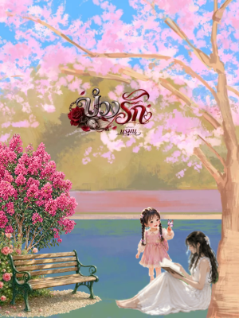

ดราม่าหนัก | รักแรก | ลูกสาว | คนรักเก่า | พบกันอีกครั้ง
บางความรักแม้เวลาจะผ่านไปนานเพียงใด แต่ความเจ็บปวดกลับไม่เคยจางหาย เมื่อคนสองคนที่เคยรักกันสุดหัวใจต้องกลับมาพบกันอีกครั้ง พร้อมความลับที่ไม่มีใครเคยล่วงรู้
เมื่อสี่ปีก่อน อันดาเคยเป็นผู้หญิงที่นกันต์รักที่สุด เธอคือรักแรกของเขา และเป็นคนที่เขาเคยคิดว่าจะอยู่ด้วยกันไปจนเรียนจบ
แต่วันที่อันดาบอกว่าเธอตั้งครรภ์ ทุกอย่างกลับเปลี่ยนไป
“เราทั้งคู่ยังเรียนอยู่เลยอันดา เรายังไม่พร้อมที่จะมีลูกตอนนี้”
ประโยคสั้น ๆ ของนกันต์ กลายเป็นจุดเริ่มต้นของความเจ็บปวดทั้งหมด อันดาเคยหวังว่าเขาจะกอดเธอ เคยหวังว่าเขาจะบอกว่าไม่เป็นไร และเคยหวังว่าเขาจะพูดว่า
“พี่จะอยู่กับอันดาเอง”
แต่สิ่งที่เธอได้รับกลับเป็นเพียงความเงียบ ในวันที่เธอตัดสินใจไปคลินิก นกันต์ก็เลือกเดินออกจากชีวิตเธอ
อันดาไม่ได้ทำแท้ง เธอเลือกเก็บลูกเอาไว้ แต่ในขณะที่เธอเลือกเก็บชีวิตเล็ก ๆ เอาไว้ นกันต์กลับเลือกที่จะทิ้งความสัมพันธ์ของพวกเขา เขาบอกเลิกเธอ และเพียงหนึ่งสัปดาห์ต่อมา อันดาก็พบว่าเขามีผู้หญิงคนใหม่อยู่ข้างกาย วันนั้นเธอจึงตัดสินใจหายไป พร้อมกับความลับหนึ่งเดียว
ลูกของเขา...
สี่ปีต่อมา
อันดากลายเป็นผู้หญิงอีกคน จากเด็กสาวที่เคยร้องไห้เพราะความรัก เธอกลายเป็นแม่ที่เข้มแข็ง ทำงานอยู่ที่ไร่องุ่นแถวเขาใหญ่ ใช้ชีวิตธรรมดา ๆ กับลูกสาวตัวน้อย ณัฐรดา หรือ น้องรดา
เด็กหญิงวัยสามขวบเศษที่สดใส ช่างพูด และเป็นเหตุผลเดียวที่ทำให้อันดายังยิ้มได้ในทุกวัน อันดาไม่เคยเล่าเรื่องพ่อของรดาให้ลูกฟัง เธอไม่ได้บอกว่าพ่อของรดาคือใคร และไม่เคยพูดชื่อนกันต์อีกเลย
เธอคิดว่าชีวิตของเธอกับเขาคงไม่มีวันกลับมาเกี่ยวข้องกันอีก
น้องรดาเห็นรถมอเตอร์ไซค์คันเก่าของแม่จอดอยู่ที่หน้าบ้าน ก็รีบวิ่งเข้ามาสวมกอดขาแม่ทันทีที่เธอก้าวลงจากรถ
“แม่จ๋า!” เสียงใสแจ๋วของรดาทักทาย พร้อมกับซบใบหน้าแก้มป่องลงกับเรียวขาของแม่อย่างออดอ้อน
อันดารีบทรุดตัวลงคุกเข่ากับพื้นดินหน้าบ้าน ดึงร่างเล็กเข้ามากอดแนบอกแน่น หยาดน้ำตาที่พยายามกลั้นไว้ตลอดทางพรั่งพรูไหลออกมาอีกครั้ง
รดาเงยหน้าขึ้นมองแม่ด้วยดวงตากลมโตใสแป๋ว มือป้อม ๆ เอื้อมขึ้นแตะแก้มเปื้อนคราบน้ำตาของแม่อย่างแผ่วเบา
“แม่ร้องไห้เหรอคะ?”
อันดาส่ายหน้าช้า ๆ พยายามฝืนยิ้มทั้งที่เสียงสั่นเครือ “เปล่าค่ะ แม่ไม่ได้ร้องไห้”
“แม่เสียใจเหรอ”
คำถามซื่อ ๆ ของลูกกลับสะเทือนลึกเข้าไปในหัวใจของคนเป็นแม่ จนอันดาหลุดสะอื้นฮือออกมาอย่างกลั้นไม่อยู่ เธอกอดร่างนิ่มของลูกสาวแน่นกว่าเดิม ราวกับกลัวว่าแก้วตาดวงใจคนนี้จะหลุดมือไป
“แม่ไม่เป็นไรค่ะ คนเก่งของแม่”
“หนูอยู่กับแม่นะแม่ไม่ต้องร้องไห้นะ”